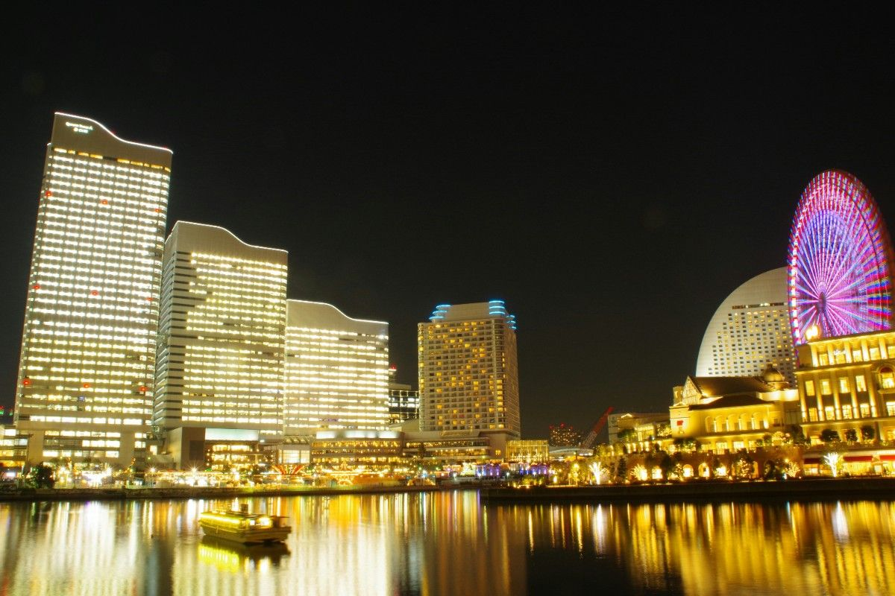
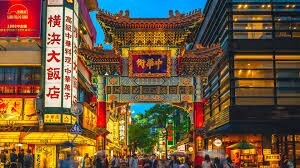

A stylish port city blending modern life with seaside charm.
Yokohama is a modern port city located just outside Tokyo. It combines urban development with a relaxed waterfront lifestyle. The city features open spaces, scenic views, and a slightly more international feel compared to Tokyo. It’s modern but not overwhelming.


Modern, stylish, relaxed
Yokohama is perfect if you want access to Tokyo while living in a calmer environment. It’s stylish, clean, and offers a more balanced urban experience.